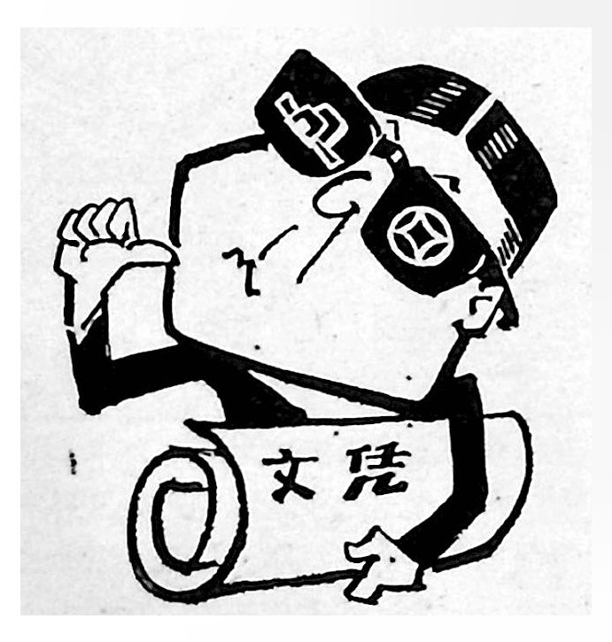

黄允中 《人事》1987年第7期（总第22期），第48页
为某君画像（插图）
Portrait of a Certain Gentleman (illustration)
- Text in the drawing
- 文凭 / 官（镜片上）
Diploma / Office (on the lens) - Passage illustrated
某君年近四十，身体状况良好，前年混得文凭，去年捞到党票，今年便把工作调，开口先把官要。
A certain gentleman, nearly forty, in good health; the year before last he scraped together a diploma, last year he fished out a Party card, and this year he's after a transfer — and the first thing out of his mouth is a demand for office.Opening lines of the satirical poem 为某君画像 (“Portrait of a Certain Gentleman”) by Ren Zhe, on the same page. 人哲《为某君画像》（讽刺诗），同页
- Description
- Illustration for the satirical poem: a smug man in dark glasses — one lens marked “office,” the other a coin — jabs his thumb at himself, a rolled diploma under his arm.
- Note
- The poem mocks a forty-year-old who “scraped together a diploma” and a Party card, then demanded a bureau-level post; when finally asked to draft a document, he produced an unreadable mess.
- Artist
- Huang Yunzhong 黄允中
- Published in
- 《人事》1987年第7期（总第22期）, p. 48
- Themes
- Diplomas and credentials · Promotion · Story illustrations

Cite
Huang Yunzhong, “为某君画像（插图）” [Portrait of a Certain Gentleman (illustration)], Renshi (Personnel) 《人事》, 1987, no. 7, p. 48.